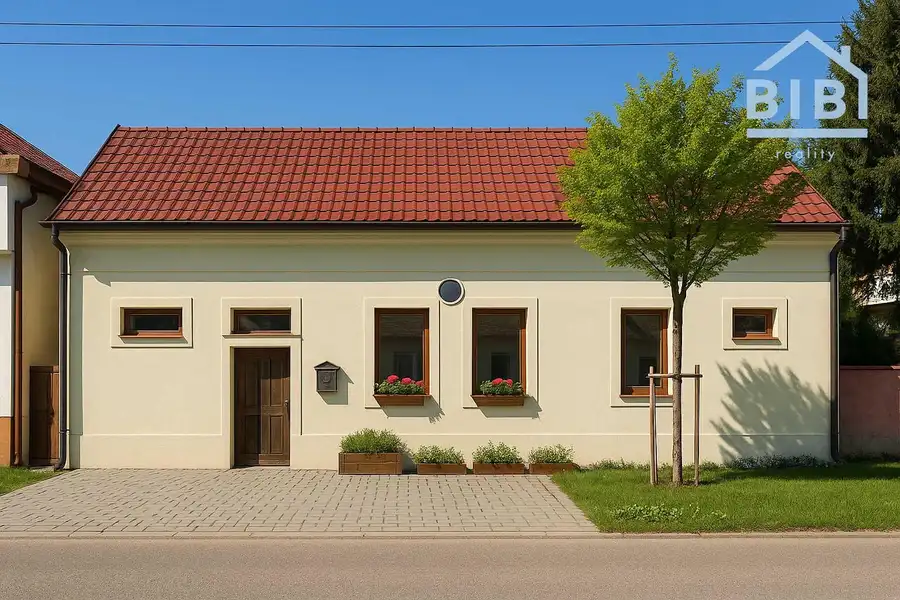
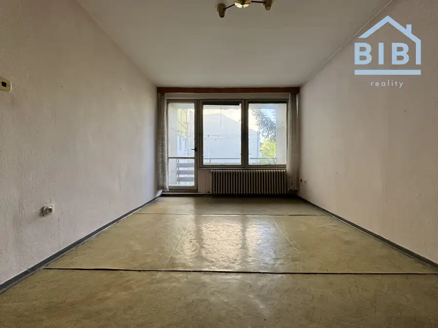
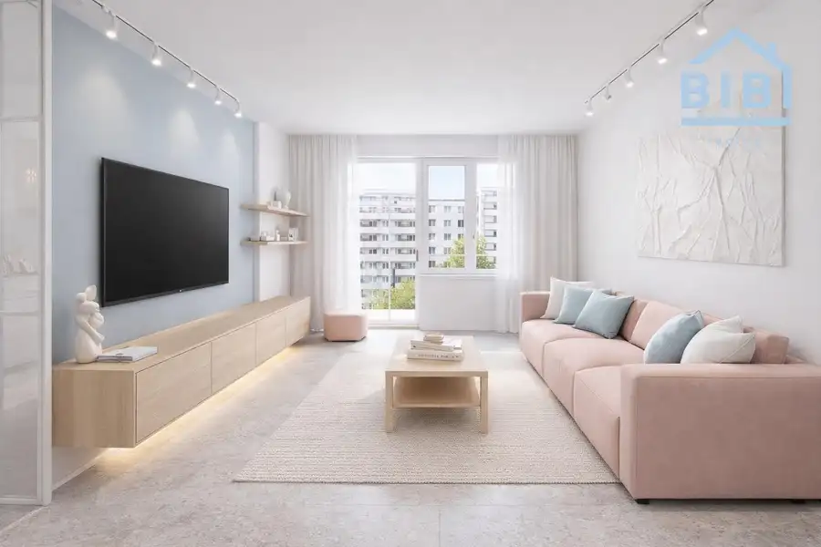

PREDAJ Priestranná garsónka s parkovaním - Piešťany Zornica
Piešťany
- Plocha31 m²
- StavNovostavba
- VlastníctvoOsobné
O nehnuteľnosti
BIBI reality s.r.o. Ponúkame Vám na predaj priestrannú garsónku s vlastným parkovným miestom v Piešťanoch v jednom z najnovších bytových domov v objekte Zornica na ulici Pod Párovcami. Byt sa nachádza na prízemí/3. poschodí. Byt sa ponúka ako na fotografiách. Výmera bytu je 31 m2 + pivnica 2 m2. Byt má plastové okná, bezpečnostné dvere, murované jadro, plynový kotol, plávajúcu podlahu a dlažbu, zariadenú kuchyňu a kúpeľňu. Výmera:- 31 m2 + pivnica 2 m2 Orientácia:- JuhDispozičné riešenie:- vstupná chodba, kúpeľňa so sprchovým kútom a WC, zariadená kuchyňa s ostrovčekom a obývaciu izbu.BYTOVÝ DOM: kolaudovaný v roku 2014, zateplenie, nová strecha, tiché prostredie, elektrické odomykanie, vlastné kúrenie, nové rozvody elektriny a vody.MESAČNÉ NÁKLADY: 155,- EUR/2 osobyLOKALITA: kompletná občianska vybavenosť = ZŠ, MŠ, ihriská, nemocnica, potraviny, nákupné stredisko, zástavka MHD, futbalové ihrisko, tenisové kurty, park, centrum mesta (cca 10 min. pešo).VÝHODY:+ priestrannosť+ výborná dostupnosť do centra+ takmer nový + obľúbená lokalita+ vhodný ako investícia - prenájom+ vlastné parkovacie miesto v ceneCena: 120.000,- EURV cene je zahrnutá provízia realitnej kancelárie a kompletný právny servis zabezpečovaný advokátskou kanceláriou, poplatky za vklad do katastra, poplatky u notára. Naša realitná kancelária ponúka bezplatnú možnosť zabezpečenia najvýhodnejšieho financovania nehnuteľnosti cez všetky banky na Slovensku. Kontakt:Ing. Michal Haring 0915 553 053Haring@bibireality.sk
Parametre
| Cellar area | 2 m² |
|---|---|
| Cena vrátane energií | Nie |
| Druh | Garsónka |
| Dátum zverejnenia | 16. 9. 2026 |
| Energie | 155 |
| Orientácia | Južná |
| Počet pivníc | 1 |
| Rok kolaudácie | 2014 |
| Stav nehnuteľnosti | Novostavba |
| Typ | Predaj |
| Typ konštrukcie | Tehlová |
| Umiestnenie | Prízemie |
| Vlastníctvo | Osobné |
| Vybavenie | Pivnica, Sklad |
| Úžitková plocha | 31 m² |
Kde to je


Mohlo by Vás zaujímať

DomNové10 235 000 €PREDAJ rodinný dom Vlčkovce Vlčkovce 187 m² BIBI reality s.r.o. Vám Ponúka na predaj priestranný 4-izbový rodinný dom v obci Vlčkovce pri Trnave. Nachádza sa popri hlavnej ceste. Dom je po…
BytNové10 95 000 €PREDAJ 2-izbový byt - Banka Banka 2-izbový55 m² BIBI reality s.r.o. Vám ponúka na predaj priestranný 2-izbový byt v obci Banka. Byt je v pôvodnom stave, vyprataný a pripravený na kompletnú…
BytNové10 140 000 €PREDAJ 3-izbový byt, Piešťany - M. Bela Piešťany 3-izbový67 m²3. podlažie BIBI reality s.r.o. Vám ponúka na predaj priestranný 3-izbový byt v Piešťanoch na ulici M. Bela. Byt je po čiastočnej rekonštrukcii a disponuje…